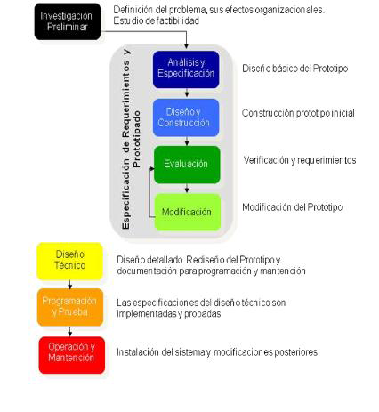

Desarrollo por Prototipos
El modelo de prototipos permite que todo el sistema, o algunos de sus partes, se construyan rápidamente para comprender con facilidad y aclarar ciertos aspectos en los que se aseguren que el desarrollador, el usuario, el cliente estén de acuerdo en lo que se necesita así como también la solución que se propone para dicha necesidad
Fases
Recolección y refinamiento de requisitos Modelado, diseño rápido Construcción del Prototipo Desarrollo, evaluación del prototipo por el cliente Refinamiento del prototipo Producto de Ingeniería
- Ventajas:
- No modifica el flujo del ciclo de vida.
- Reduce el riesgo de construir productos que no satisfagan las necesidades de los usuarios.
- Reduce costo y aumenta la probabilidad de éxito.
- Exige disponer de las herramientas adecuadas.
- Este modelo es útil cuando el cliente conoce los objetivos generales para el software, pero no identifica los requisitos detallados de entrada, procesamiento o salida.
- También ofrece un mejor enfoque cuando el responsable del desarrollo del software está inseguro de la eficacia de un algoritmo, de la adaptabilidad de un sistema operativo o de la forma que debería tomar la interacción humano-máquina.
- Desventajas:
- Debido a que el usuario ve que el prototipo funciona piensa que este es el producto terminado y no entienden que recién se va a desarrollar el software.
- El desarrolador puede caer en la tentación de ampliar el prototipo para construir el sistema final sin tener en cuenta los compromisos de calidad y mantenimiento que tiene con el cliente
- Tipos:
- Modelo de Prototipos rápido: Metodología de diseño que desarrolla rápidamente nuevos diseños, los evalúa y prescinde del prototipo cuando el próximo diseño es desarrollado mediante un nuevo prototipo.
- Modelo de Prototipos reutilizable: También conocido como "Evolutionary Prototyping"; no se pierde el esfuerzo efectuado en la construcción del prototipo pues sus partes o el conjunto pueden ser utilizados para construir el producto real. Mayormente es utilizado en el desarrollo de software, si bien determinados productos de hardware pueden hacer uso del prototipo como la base del diseño de moldes en la fabricación con plásticos o en el diseño de carrocerías de automóviles.
- Modelo de Prototipos Modular: También conocido como Prototipado Incremental (Incremental prototyping); se añaden nuevos elementos sobre el prototipo a medida que el ciclo de diseño progresa.
- Modelo de Prototipos Horizontal: El prototipo cubre un amplio número de aspectos y funciones pero la mayoría no son operativas. Resulta muy útil para evaluar el alcance del producto, pero no su uso real.
- Modelo de Prototipos Vertical: El prototipo cubre sólo un pequeño número de funciones operativas. Resulta muy útil para evaluar el uso real sobre una pequeña parte del producto.
- Modelo de Prototipos de Baja-fidelidad: El prototipo se implementa con papel y lápiz, emulando la función del producto real sin mostrar el aspecto real del mismo. Resulta muy útil para realizar tests baratos.
- Modelo de Prototipos de Alta-fidelidad: El prototipo se implementa de la forma más cercana posible al diseño real en términos de aspecto, impresiones, interacción y tiempo.
